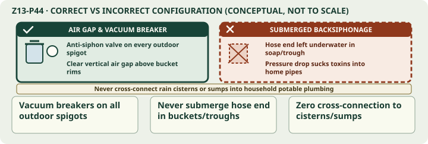

Z13-P44 · Home survival and utilities · New manuscript
Prevent residential hose backflow and plumbing cross-connections
Stop lawn chemicals, buckets of soapy water, or cistern water from siphoning backward into home drinking-water pipes during pressure drops.
When it applies · Homes using outdoor garden hoses, utility sinks, pesticide sprayers, or auxiliary backup water systems.
Equipment · Hose-bibb vacuum breakers (anti-siphon valves), physical air gaps, and licensed plumber guidance for auxiliary piping.

Actions
- Install inexpensive threaded hose-bibb vacuum breakers on every exterior faucet and NEVER leave a garden hose end submerged inside a bucket of detergent, animal trough, puddle, or chemical sprayer—a sudden municipal main break or well shutoff creates negative vacuum suction ("backsiphonage") that pulls dirty liquid straight into house pipes.[U21, U08, U05]
- Maintain a physical air gap (clear vertical air space above the rim) whenever filling buckets, rain barrels, or emergency tanks from a tap.[U21, U08, W06]
- NEVER connect a rainwater cistern, sump pump, or auxiliary untreated pump directly into household potable plumbing—physical isolation and licensed backflow assemblies are mandatory under plumbing codes.[U21, U08, U06, W03]
Failure recognition · Leaving a garden hose running inside a soapy wash bucket when a neighborhood water main breaks, siphoning detergent back into the kitchen drinking line.[U08]
Verify · Confirm anti-siphon vacuum breakers installed on exterior spigots, zero submerged hose ends, and complete physical isolation from non-potable tanks.[U21, U08, U05]
Stop or change course · Suspected chemical or sewage backsiphonage into home pipes requires immediate Do Not Drink isolation, flushing guidance, and licensed plumbing/health review.[W01, U08]
Evidence and editorial notes
- U05 · US EPA · Private Drinking Water Wells (current web edition)
- Section: Private Drinking Water Wells > Maintenance, Floods, and Testing · Conditions: Households relying on private domestic groundwater wells
Support: Private wells are not regulated by municipal utilities; test water annually (and after any flood, power loss with pressure drop, or plumbing repair) through a certified laboratory and keep wellheads sealed above grade away from runoff and chemicals.
Limitations: Visual clarity or normal taste never proves a private well is free of bacteria, nitrates, or arsenic. · Conflicting evidence: None; aligns with CDC-WELL (W18) and MDH-WELL-HOME.
Editorial note: Core private-well governance and testing cadence in Z13. · Specialist reviewer: Hydrogeology, licensed well contractor, and public health
Primary source · checked 2026-11-24 - U06 · Minnesota Dept. of Health · Wells and Borings Safety (current web edition)
- Section: Wells and Borings > Minnesota Private Well Standards and Disinfection · Conditions: Minnesota and Upper Midwest private residential wells
Support: Use a licensed Minnesota well contractor for wellhead repair, electrical pump work, or shock disinfection after flooding or backflow; maintain sanitary well caps and isolate well casings from surface snowmelt and agricultural runoff.
Limitations: DIY well-cap removal or improper chlorine mixing risks aquifer contamination and electrical shock. · Conflicting evidence: None; regionalizes EPA-WELL for Minnesota conditions.
Editorial note: Anchors Upper Midwest private-well resilience and licensed-trade handoff. · Specialist reviewer: Minnesota environmental health and licensed well trades
Primary source · checked 2026-11-24 - U08 · FEMA / Ready.gov · Water Storage and Emergency Supply (current web edition)
- Section: Water > Emergency Household Supply, Shutoff, and Alternate Indoor Sources · Conditions: Household plumbing disruptions, water-main breaks, or winter freeze outages
Support: Store at least 1 gallon per person per day for several days (two weeks where feasible for extended outages), know the main water shutoff valve location, and recognize clean indoor water-heater reserve boundaries only after shutting off power/gas and confirming supply safety.
Limitations: Never use water from radiators, hot-water boilers, or chemically treated toilet tanks for drinking. · Conflicting evidence: None; complements CDC-S (W06, W14).
Editorial note: Covers household water shutoffs, pipe-freeze prevention, and safe indoor reserves. · Specialist reviewer: Plumbing safety and drinking-water public health
Primary source · checked 2026-11-24 - U21 · US EPA · Cross-Connection Control Manual (EPA 816-R-03-002) (February 2003)
- Section: Chapter 3 Theory of Backflow and Backsiphonage (page 12, Figure 7); Chapter 4 Air Gap and Hose Bibb Vacuum Breakers (pages 16 and 18) · Conditions: Household hoses, buckets and auxiliary water near potable plumbing
Support: Backsiphonage is reverse flow caused by atmospheric pressure forcing a pollutant liquid toward a potable supply under vacuum, for example through a submerged hose end when supply pressure drops. Air gaps are non-mechanical backflow preventers effective against backsiphonage and backpressure. Hose bibb vacuum breakers attach to hose faucets and vent to atmosphere when supply pressure is off; they are not backpressure devices.
Limitations: Guidance manual for programs and plumbers. Device choice and installation follow local plumbing code and licensed plumbers; fixed air-gap dimensions apply to fixtures, not hand-held hoses. · Conflicting evidence: None.
Editorial note: Grounds the Z13-P44 backsiphonage path, vacuum breaker and air gap. · Specialist reviewer: Licensed plumber and drinking-water safety
Primary source · checked 2026-11-25 - W01 · CDC · How to Make Water Safe in an Emergency (2024-09-19)
- Section: Water with fuel or toxic chemicals in it · Conditions: Suspected fuel, toxic chemicals or radioactive contamination
Support: Use a different safe supply. Standard boiling and microbial disinfection do not make this water safe.
Limitations: Does not list contaminant-specific lab remediation; applies to emergency consumer decisions only. · Conflicting evidence: None across CDC/EPA emergency guidance.
Editorial note: Used as upstream hard-stop gate prior to any field treatment card. · Specialist reviewer: Drinking-water safety and public health
Primary source · checked 2026-11-24 - W03 · CDC · Collecting Rainwater and Your Health (current web edition)
- Section: Rainwater might not be safe for household use · Conditions: Collected rain, including apparently clean runoff
Support: Germs and chemicals can enter from air, roof, gutters or storage. Prefer safe drinking water for ingestion.
Limitations: Site-specific roof and atmospheric chemistry vary; no universal roof-wash formula assumed. · Conflicting evidence: None; aligns with CDC potable-first hierarchy.
Editorial note: Separates catchment from raw storage and microbial treatment. · Specialist reviewer: Drinking-water safety and environmental health
Primary source · checked 2026-11-24 - W06 · CDC · How to Create an Emergency Water Supply (current web edition)
- Section: How to store emergency water; Safe storage containers · Conditions: Potable water intended for emergency storage
Support: Prefer sealed commercial water or clean food-grade tight-closing containers. Avoid containers that held toxic chemicals.
Limitations: Container shelf durability and rotation depend on plastic/material type and storage heat. · Conflicting evidence: None; reinforces strict raw-vs-clean segregation.
Editorial note: Used to enforce labeling and dedicated raw/potable vessel separation. · Specialist reviewer: Drinking-water safety and public health
Primary source · checked 2026-11-24
Source lineage · US EPA Private Wells and CDC Water; new manuscript · Classification · New manuscript.